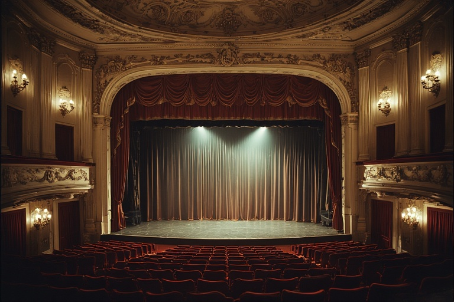

Second Etat d'Oslavie
L'Hymne national oslave

"L'Allée des Marronniers" (en langue traditionnelle : Konyr Jol) constitue l'expression sonore de l'âme oslave. Composée sur les vers du Poète National K. Varkas en 1842, au cœur des heures les plus sombres de notre histoire, cette œuvre se distingue par son austérité orchestrale et sa gravité rythmique. Contrairement aux marches militaires conventionnelles qui exaltent la conquête, notre hymne célèbre la résilience. Il n'invite pas à la célébration, mais au recueillement collectif, unissant le citoyen à la terre qu'il défend.
Histoire et symbolique
L'orchestration de l'hymne est le fruit d'une décision politique et philosophique fondatrice. Lors de sa validation par un conseil exeptionnel du Premier État, le choix fut fait de bannir l'usage des cuivres, jugés trop impériaux et agressifs. L'Oslavie a privilégié la texture sombre des cordes graves et la percussion lourde. Ce choix musicologique unique vise à imiter le battement du cœur de la terre ("la Glèbe") et le pas régulier, inarrêtable, du travailleur rentrant de l'usine ou du soldat montant au front. C'est une musique qui ne s'envole pas vers le ciel, mais qui s'enracine dans le sol.
Le texte file la métaphore du Marronnier, arbre tutélaire de nos avenues et de nos places. Si le chêne représente la force brute et le laurier la gloire, le Marronnier incarne la protection et la continuité. Le refrain "Le chant du Marron qui tombe et s'enracine" évoque le cycle du sacrifice : chaque Oslave qui tombe ne disparaît pas ; il devient le terreau fertile sur lequel grandira la génération suivante. L'hymne transforme ainsi la fatalité de la mort en un acte de service permanent envers la communauté, scellant le pacte entre les vivants et les morts.
Protocole
L'exécution de l'Hymne National exige une posture de stricte dignité. Dès les premières mesures de l'ostinato de contrebasse, tout citoyen, civil ou militaire, doit cesser toute activité, se lever et adopter si possible la position de "Vigilance Passive" : corps droit, bras le long du corps, tête légèrement inclinée vers le sol en signe d'humilité devant l'effort collectif. Le silence doit être absolu. Contrairement aux usages d'autres nations, il est formellement interdit de porter la main sur le cœur, ce geste étant considéré comme une manifestation d'individualisme sentimental incompatible avec la sobriété oslave.
"L'Allée des Marronniers" n'est pas un spectacle ; c'est une commémoration funèbre et civique. En conséquence, tout applaudissement à l'issue de l'hymne est strictement proscrit et considéré comme une offense à la mémoire nationale. Cette spécificité protocolaire, rappelée systématiquement aux délégations étrangères, a par le passé causé des incidents diplomatiques notables, le silence pesant qui suit la dernière note étant souvent mal interprété par les observateurs occidentaux. Pour l'Oslavie, ce silence final est la note la plus importante de la partition : c'est l'instant où le Devoir s'imprègne dans les esprits.